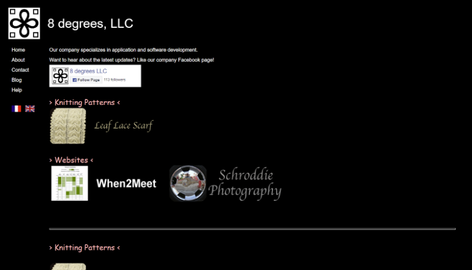
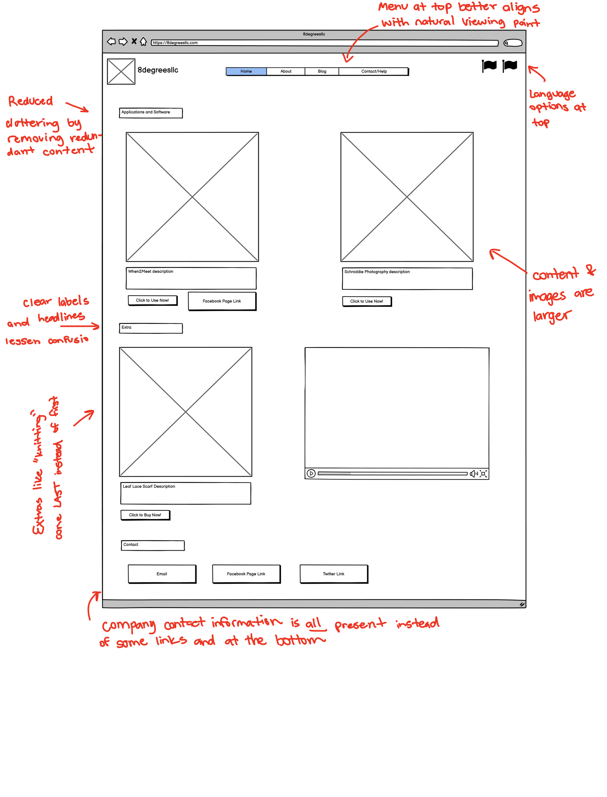
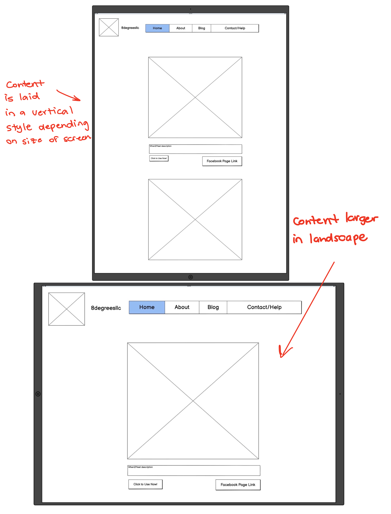
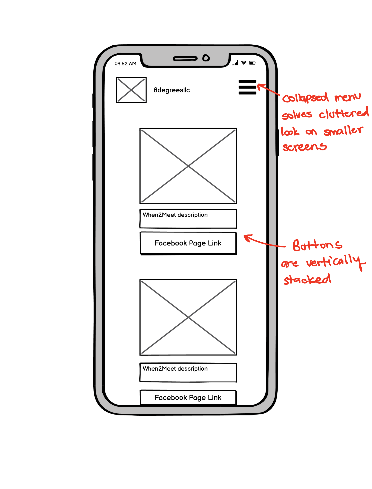
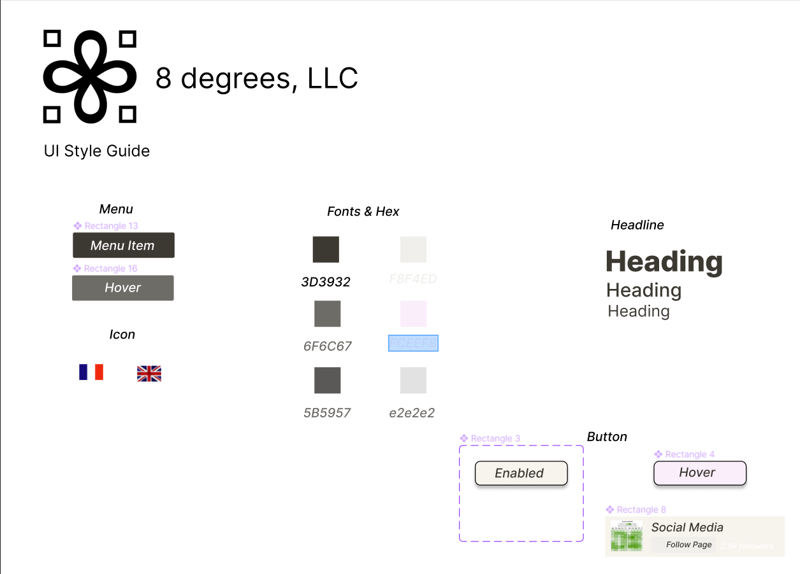
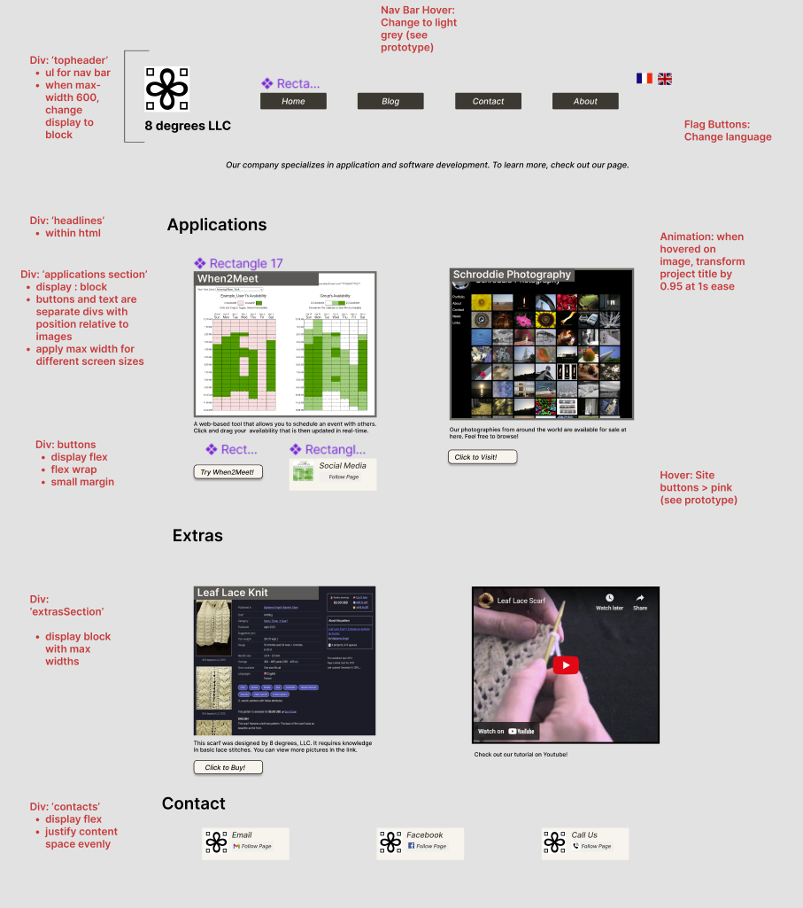
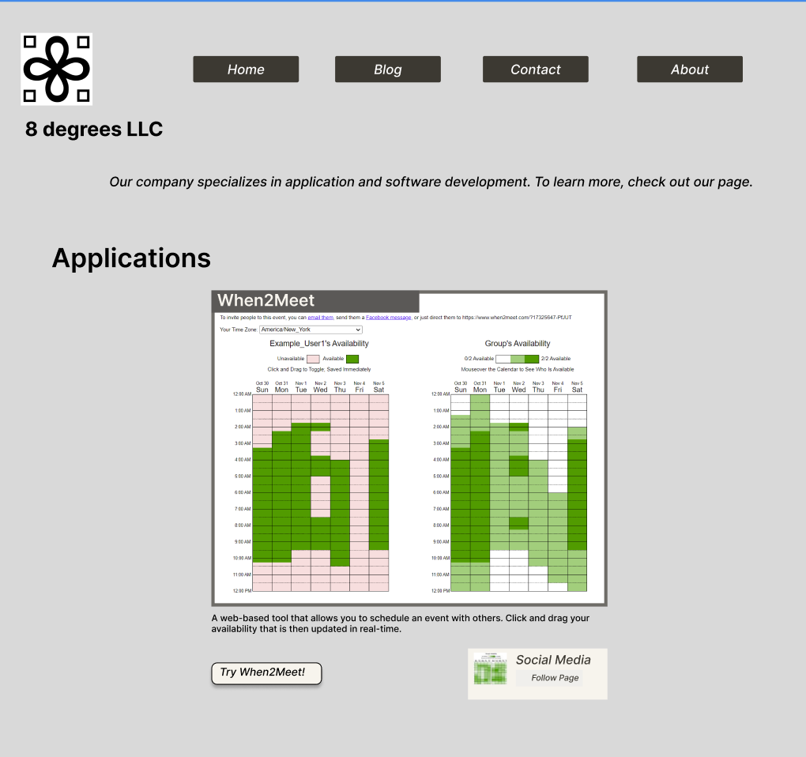
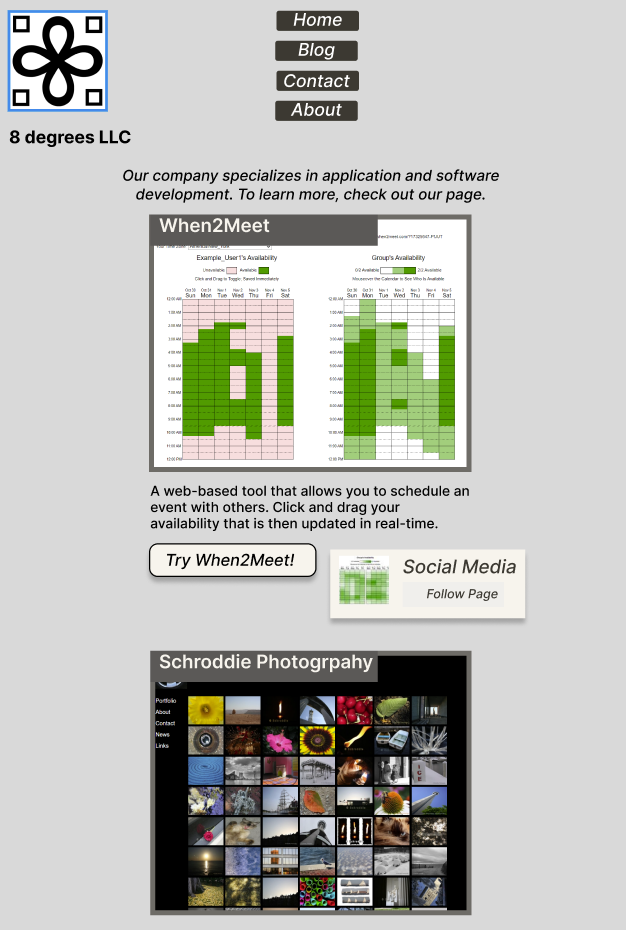
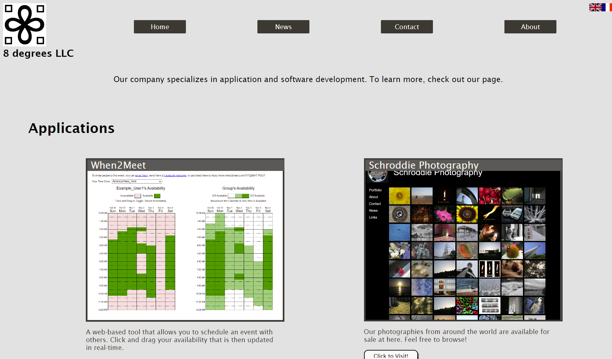

This project explores the workflow of redesigning a simple website. Identifying flaw, hardening skills, analyzing accessibility flaws, and building a responsive website with prototypes are essential to the process behind UI/UX design.
This part selects the main website of the project. Ideally, it's one that's public but not made by a large corportation (eg. Google, Facebook). For this project, 8 Degrees LLC company's website was chosen. 8 Degrees is most widely known for their When2Meet software which is used by a large number of people and organizations.
I chose this website because When2Meet is a staple for a lot of organizations and its company website doesn’t look polished or taken care of. If I had to guess, I would say this company is no longer active as of 2006.
8 Degrees Website Two errors and 15 alerts were detected with the website. Most of them applied to missing metadata such as not specifying a language or including tags for sections for different sections (text or images a direct child of instead of a, ..etc). I agree with these detections and would even expand it to say that the different headings are not specifically defined properly.
A low-fidelity wireframe is a great way of creating a simple outline for a design. It focuses on addressing main concerns issues with previous designs without having to focus on the finer details.
  A style guide with clear documentation makes design work more consistent and makes working with other developers easier. This part of the project focuses on the componetns, their aesthetics, and interations.
With this design, I decided to keep with the simple design the website had: grayscale colors, simple box designs, and a simple font. Most of my focus was on the layout. I also chose to honor the pink hue featured in the head lines of the original website.
Using Figma, the website UI was designed based on the low-fidelity wireframes. Goals for this UI included simplicity, accessibility, and adaptability to different screen sizes. Annotations for "developers" for HTML containers and CSS attributes were also included.
  The final rendition of the website based on high-fidelity: click here
